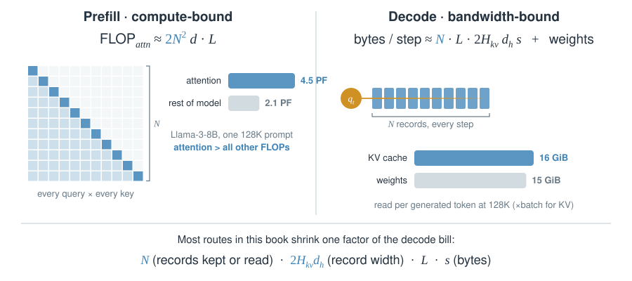
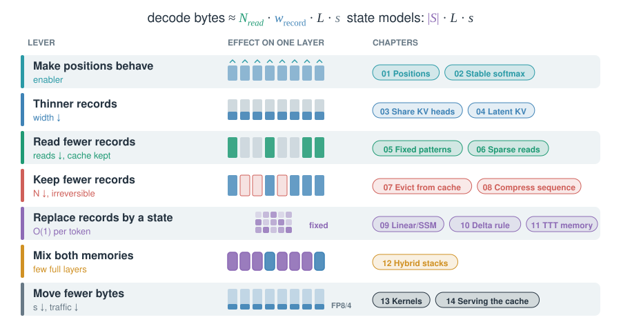
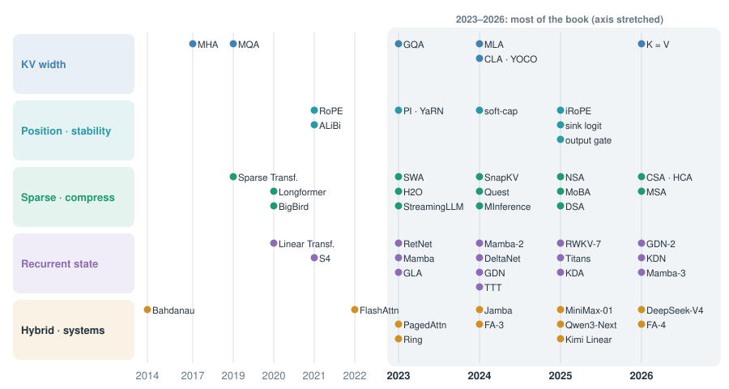
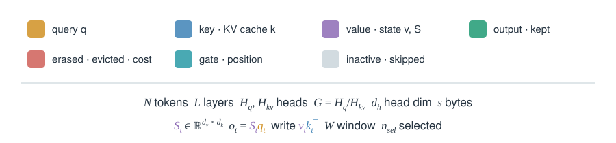

00 · The map
Every mechanism in this book attacks one factor of the attention bill. Here are the bill, the levers, and when each lever appeared.
The bill: prefill pays , decode pays bytes per token

- Two different walls. Long prompts hit compute (prefill). Long generations and big batches hit HBM bandwidth (decode).
- At 128K the cache outweighs the model. Llama-3-8B reads more KV bytes than weight bytes per token.
- Batch multiplies KV, not weights. That is why serving cares about cache bytes first.
Where the numbers come from
Llama-3-8B: , , , , 8.03 B parameters, BF16. Causal prefill: per layer . The rest of the model: . KV: B KiB per token, times 131,072 = 16 GiB.
Seven levers

- Reads vs records. Sparse reads (06) keep the cache and touch less. Eviction (07) and compression (08) shrink the cache itself.
- State models change the formula. Cost stops growing with ; capacity becomes the question (09–11).
- Production stacks combine levers. DeepSeek-V4: compressed records + top-k sparse reads + a local window + FP8 storage.
Twelve years in five lanes

- 2023 was the turn. GQA, sliding windows, H2O, RetNet, Mamba and PagedAttention all arrived in one year.
- 2025–26 is convergence. Frontier models mix a few full-attention layers with sparse reads or recurrent state.
- Each dot is a card. Use the search box in the sidebar to jump to any name.
How to read the cards

- Colours never change meaning. Gold is always a query, purple always a value or state.
- Numbers are real unless marked “toy”. Real numbers
come from papers, model cards or
config.json. See Primary sources. - Click any figure to open it full size.
![Toy 12-token causal attention. With vanilla softmax, rows with nothing to read put their slack on token 0 (0.34 in row 11). With a learned sink logit, an extra column outside the sequence absorbs the slack (0.24 in row 11) and token 0 gets 0.02. One query with six equal logits: vanilla gives each key 0.167; with z_h = 3 the sink takes 0.77 and each key 0.038, so the output shrinks to 0.23 of the mean value. Cost is one scalar per head, 2,304 parameters in gpt-oss-120b. MiMo-V2-Flash at window 128 reports MMLU 54.9 → 58.3 and BBH 52.4 → 56.1 with the sink.](figures/cards/stable-sinks.svg)
![Toy decay bias over 10 tokens. A constant forget gate (f = 0.8, ALiBi-like) decays every row the same way; FoX’s learned gates (0.97, with 0.05 at token 5) keep the past until token 5 and then wipe everything before it. Toy differential attention over 10 keys: softmax 1 gives 0.46 to key 6 and 0.06 elsewhere, λ·softmax 2 with λ = 0.6 gives 0.06 everywhere, so the difference keeps 0.40 on key 6 and cancels the rest. λ_init = 0.8 − 0.6·exp(−0.3(ℓ − 1)) is 0.20 at layer 1, 0.56 at layer 4 and 0.79 at layer 16.](figures/cards/stable-knobs.svg)
![Eight stages of a 2026 attention block and what four released models put at each, from configs and code. gpt-oss-120b: 8 KV heads × 64, full RoPE at 150K with YaRN ×32, 128-token window alternating 1:1 with full layers, a sink per head. Gemma 4 31B: K=V in global layers (4 × 512), q and k RMS-norm with scale 1.0, p-RoPE ¼ at 1M in global layers and 10K in local ones, window 1,024 at 5:1, V-norm. DeepSeek-V4-Pro: one 512-dim K=V entry (MQA), q RMS and kv-norm, 64 of 512 dims rotated, window 128 plus compressed entries, a sink per head, de-rotated output, 16-group low-rank output projection. Qwen3-Next-80B: 2 KV heads × 256, per-head q and k RMS-norm, ¼ of 256 dims rotated at 10M, full attention in 1 of 4 layers, elementwise output gate.](figures/cards/stable-anatomy.svg)
![Layer strips showing which layers own a KV cache. CLA2 in Hunyuan-Large: every second of 64 layers reuses its neighbour, 32 caches; with GQA-8 about 5% of MHA. Gemma 3n E4B: layers 20–34 reuse layer 18 (local) or 19 (global), 20 of 35 layers own a cache, global KV 14 → 8 KiB per token, window caches 28 → 16 MiB. Gemma 4 E2B: layers 15–34 reuse layers 13 and 14, 15 of 35 own a cache, 14 → 6 KiB per token. YOCO: a self-decoder with window caches, then one global KV read by every cross-decoder layer; reported about 80× less KV at 65B. Prompt tokens can stop at the last owner layer.](figures/cards/kv-cross-layer.svg)
![Top: with RoPE on the content key the score is q^T R_(j−t) W_UK c_j; the rotation depends on the key position j and sits between the query and W_UK, so W_UK cannot be folded into the query once. Bottom: MLA’s fix. Each head’s query is an absorbed 512-dim content part plus a 64-dim rotated part; the cached row is c_j (512, no RoPE) plus one rotated k^R_j (64) shared by all 128 heads; the score sums both parts and divides by √192. A shared RoPE key costs 64 elements per token, per-head rotated keys would cost 8,192; the RoPE lane is 11% of the 576 cached.](figures/cards/mla-rope.svg)
![Three steps to convert Llama-2-7B attention (W_K 4096 × 4096, 32 heads × 128) to MLA. 1: keep RoPE on a few dims (MHA2MLA: top-norm frequency pairs per head; TransMLA: fold RoPE into one head); the rest become NoPE and absorbable. 2: joint SVD or PCA of the stacked NoPE key and value projections gives W_DKV (r × 4096). 3: fine-tune with 0.3–0.6% of pre-training data (MHA2MLA) or 6B tokens (TransMLA). KV bytes per token per layer: MHA 16 KiB; MHA2MLA 5 KiB (−68.75%); with Int4 1.25 KiB (−92.19%); TransMLA 1,152 B, i.e. 576 elements (−92.97%).](figures/cards/mla-convert.svg)


![Arithmetic intensity r = b / (1 + 2b/h) of a fast-weight matmul against chunk size b for widths h = 64, 256 and 1024. TTT with b = 16 and h = 64 reaches about 11 FLOP per byte, far below the H100 ridge of about 290. LaCT mask on 12 toy tokens with chunk 4: tokens read the fast weights updated on earlier chunks and use sliding-window attention locally. Reported: under 5% FLOPs utilization for earlier TTT versus up to 70% on A100 for LaCT; fast-weight state per block 2304d versus 384d for GLA and 128d for DeltaNet.](figures/cards/ttt-large-chunk.svg)
![Elements per sequence against context length for the Qwen3-Next-80B stack: its 36 Gated DeltaNet layers hold a fixed 18.9M-element state and its 12 attention layers add 12,288 elements per token, so KV overtakes the state at N = 1,536. The same 48 layers as all attention would reach 51.5G elements at 1M tokens versus 12.9G for the hybrid. Right: whole recurrent state as the KV of N* tokens, computed from configs: Jamba 448, Qwen3-Next 1,536, Kimi Linear 2,601, Qwen3.5-397B 3,072, MiniMax-01 3,584, Nemotron 3 Nano 3,925, Granite 4.0-H-Small 4,608, Kimi K3 7,851, Nemotron-H-56B 11,059.](figures/cards/hybrid-why.svg)